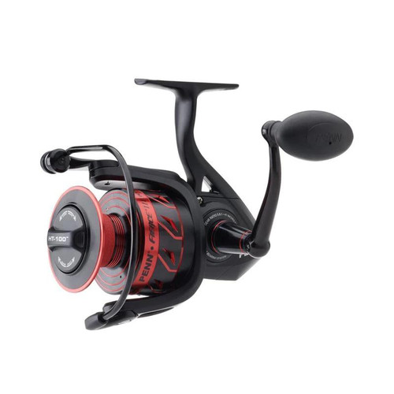

ReelCalc Reel Setup Guide
PENN Fierce III 5000 Line Capacity & Reel Setup Guide
The PENN Fierce III 5000 is worth considering for saltwater shore casting and nearshore boat fishing. This guide follows model FRCIII5000, with a published 15 lb / 200 yards mono capacity. The Superline spool provides a braid-ready attachment surface, and line-capacity rings help monitor spool fill. Choose your exact line in the preloaded calculator below to estimate a full spool or optional backing beneath a shorter working length.